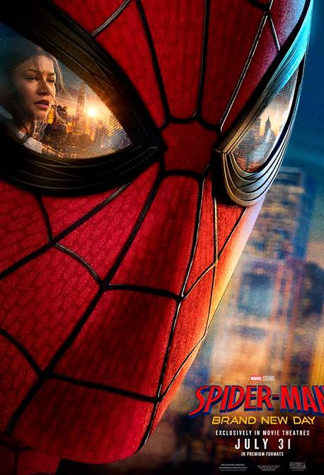

Em Homem-Aranha: Um Novo Dia, Peter Parker continua sua vida como Homem-Aranha após os acontecimentos dos filmes anteriores. Agora, ele precisa enfrentar novos desafios enquanto tenta equilibrar sua vida pessoal com a responsabilidade de proteger as pessoas. Ao longo da história, Peter se envolve em uma nova aventura cheia de ação, perigos e acontecimentos inesperados que vão testar seus limites como herói.
Clique aqui para saber mais sobre o filme